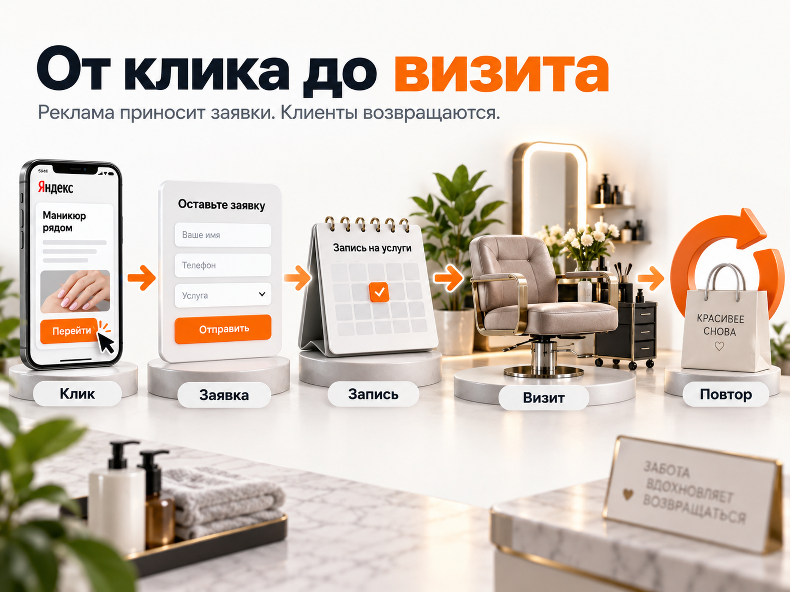
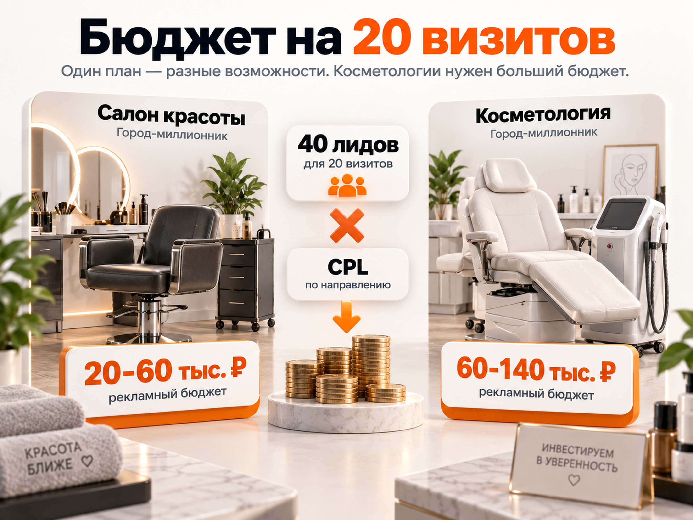

Блог о платном трафике
Продвижение салона красоты и косметологии: Яндекс Директ, бюджет и прогноз
Для салона красоты или косметологии Яндекс Директ может быть одним из основных платных каналов привлечения клиентов. Причина простая: значительная часть спроса уже сформирована. Человек ищет «маникюр рядом», «окрашивание волос цена», «лазерная эпиляция», «биоревитализация цена» или конкретную процедуру в своем городе.
Но салон красоты и медицинскую косметологию нельзя считать одной нишей. Отличаются средний чек, частота повторных визитов, стоимость клика, цена заявки, география спроса и требования к рекламе. Поэтому и прогноз нужно строить отдельно.
Если задача - получить клиентов из Яндекс Директа, я бы строил систему не вокруг количества кликов и даже не вокруг количества заявок, а вокруг цепочки:
реклама -> обращение -> подтвержденная запись -> визит -> оплата -> повторный визит.
Именно эта воронка показывает, окупается реклама или нет.

Салон красоты и косметология - две разные рекламные экономики
У обычного салона основой могут быть маникюр, педикюр, окрашивание, стрижки, брови, ресницы и другие регулярные услуги.
Здесь обычно работают три фактора:
- клиент выбирает заведение относительно близко к дому или работе;
- первый чек может быть небольшим;
- основная ценность клиента формируется за счет повторных визитов.
Поэтому дорогая первая запись сама по себе еще не означает, что реклама невыгодна. Важно знать, сколько людей возвращается второй, третий и последующие разы.
В косметологии ситуация другая. Человек может ехать дальше ради конкретного врача, аппарата или процедуры, а стоимость услуги обычно позволяет выдерживать более высокий CAC. Одновременно возрастает цена ошибки: дорогой трафик на слабую страницу способен очень быстро потратить бюджет.
Отдельно нужно учитывать модерацию. Яндекс относит ряд косметологических процедур, включая пилинг, лифтинг и мезотерапию, к косметологическим услугам, для продвижения которых требуются документы на медицинскую деятельность. Для текстовых объявлений Яндекс автоматически добавляет предупреждение о противопоказаниях, а в ряде графических форматов предупреждение нужно размещать самостоятельно.
То есть объединять условный маникюр, окрашивание волос и медицинскую косметологию в одну рекламную логику не стоит.
Начинать нужно не с Директа, а с услуг
Типичная ошибка - рекламировать «салон красоты» вообще.
На практике у одной организации могут одновременно быть:
- маникюр за 2 000 ₽;
- окрашивание за 8 000 ₽;
- уход за волосами за 5 000 ₽;
- лазерная эпиляция за 2 500 ₽;
- аппаратная процедура за 15 000 ₽.
У этих услуг разная маржинальность, разный спрос и допустимая стоимость клиента.
Перед запуском я бы разделил услуги минимум на три группы:
- Основные услуги, которые нужно загружать постоянно.
- Высокомаржинальные направления, на которые допустим более дорогой лид.
- Входные услуги, через которые выгодно впервые познакомить человека с салоном или клиникой.
После этого для каждого направления считается допустимая стоимость клиента.
Например, если с первого визита бизнес может безболезненно потратить на привлечение нового клиента 2 000 ₽, а в оплаченный визит превращается половина обращений, допустимый CPL составляет примерно 1 000 ₽.
Формула:
допустимый CPL = допустимый CAC × конверсия лида в клиента
Без такой математики невозможно определить, дорогая реклама или дешевая.
Посадочная страница влияет на CPL не меньше рекламы
Вести весь трафик на главную страницу салона - слабая схема.
Человек, который искал лазерную эпиляцию, должен сразу увидеть лазерную эпиляцию. Пользователь, который искал сложное окрашивание, не должен самостоятельно искать эту услугу среди двадцати пунктов меню.
Для приоритетных направлений желательно иметь отдельные страницы или как минимум хорошо выделенные блоки с:
- названием конкретной услуги;
- стоимостью или понятным ориентиром;
- фотографиями работ;
- информацией о специалисте;
- адресом;
- отзывами;
- понятной онлайн-записью;
- ответами на основные возражения.
Для косметологии особенно важны врач, оборудование, процедура, стоимость, документы и понятное объяснение того, что получит пациент.
Свежий кейс Megagroup от 1 июня 2026 года хорошо показывает влияние самой связки «реклама + страница». Для процедуры фотоомоложения после переработки лендинга и оптимизации Директа расход вырос с 56 959 до 133 791 ₽, но количество лидов увеличилось с 7 до 27. CPL снизился с 8 137 до 4 955 ₽.
То есть проблема дорогого лида далеко не всегда находится внутри рекламного кабинета.
Аналитику нужно довести до записи и визита
Для салона красоты обычной цели «отправлена форма» недостаточно.
Минимально стоит отслеживать:
- заявки с сайта;
- звонки;
- переходы в мессенджеры;
- онлайн-запись;
- подтвержденную запись;
- фактический визит;
- оплату.
Если используется CRM или система онлайн-записи, данные о подтвержденных записях и визитах желательно возвращать в Метрику как офлайн-конверсии.
Яндекс позволяет передавать такие события из CRM и использовать их не только для аналитики, но и для оптимизации рекламных кампаний.
Это особенно важно в beauty-нише.
Предположим, две кампании дали по 20 заявок:
| Кампания | Заявки | Визиты | Цена заявки | Цена визита |
|---|---|---|---|---|
| Кампания А | 20 | 5 | 700 ₽ | 2 800 ₽ |
| Кампания Б | 20 | 12 | 1 000 ₽ | 1 667 ₽ |
Если смотреть только на CPL, победит кампания А. Если считать реальных клиентов, выгоднее кампания Б.
Поэтому оптимальный KPI - не самая дешевая форма, а стоимость подходящего клиента.
Как запускать Яндекс Директ для салона красоты
В 2026 году основной гибкий инструмент Директа - Единая перфоманс-кампания. В ней можно отдельно работать с Поиском, РСЯ и Картами, задавать разные группы, таргетинги и стратегии.
Для локального beauty-бизнеса я бы не смешивал все источники трафика в одну непрозрачную конструкцию.
Поиск - перехватываем сформированный спрос
В первую очередь нужны прямые коммерческие запросы.
Например:
`маникюр + район`
`салон красоты + район`
`окрашивание волос + цена`
`парикмахерская рядом`
`лазерная эпиляция + город`
`биоревитализация + цена`
`косметолог + район`
Отдельно можно тестировать запросы по конкретным технологиям, аппаратам, специалистам и конкурентам.
Самые горячие группы желательно отделять от более широкого спроса. Тогда будет понятно, сколько стоит человек, который уже ищет конкретную процедуру, и сколько приходится платить за менее сформированный интерес.
Обязательно анализировать реальные поисковые запросы после запуска. Из трафика регулярно приходится исключать обучение, вакансии, оборудование, самостоятельное выполнение процедур и другой некоммерческий спрос.
География особенно важна для обычного салона
Для маникюра или стрижки человек редко будет регулярно ездить через весь крупный город без серьезной причины.
Поэтому салону с одной точкой обычно выгоднее сначала получить максимальный охват в своей реальной зоне обслуживания, а уже затем расширять географию.
У премиального салона, известного мастера или клиники косметологии ситуация может быть противоположной: ради конкретного специалиста или процедуры клиент готов ехать значительно дальше.
Одинаковый геотаргетинг для всех beauty-проектов здесь не работает.
РСЯ стоит тестировать отдельно
Рекламная сеть Яндекса особенно интересна для визуальных и понятных услуг: лазерной эпиляции, окрашивания, ногтевого сервиса, аппаратной косметологии.
Здесь человек не обязательно ищет процедуру прямо сейчас. Поэтому намного сильнее влияет предложение и креатив.
Свежий опубликованный 15 июня 2026 года кейс по лазерной эпиляции показывает 1 196 заявок с CPL 474 ₽. Автор кейса делал основной акцент именно на РСЯ и сильном входном предложении. При этом в материале недостаточно данных, чтобы переносить 474 ₽ на весь рынок, поэтому показатель стоит воспринимать только как пример того, насколько дешевой может оказаться отдельная рабочая связка.
РСЯ также логично использовать для ретаргетинга: возвращать людей, которые уже смотрели конкретную услугу, изучали цены или начали запись, но не завершили ее.
С лета 2026 года при создании новых кампаний нужно учитывать переход ЕПК на комбинаторные объявления: Яндекс прекратил создание новых обычных текстово-графических объявлений и переводит кампании на формат с несколькими заголовками, текстами и визуальными элементами.
Карты нельзя отделять от рекламы салона
Для локального бизнеса карточка организации - часть рекламной системы.
Пользователь может увидеть организацию на Поиске, перейти в Карты, посмотреть фотографии, рейтинг, отзывы, цены и только после этого записаться.
В ЕПК организация из Яндекс Бизнеса может использоваться непосредственно в рекламной кампании, а показы доступны в Яндекс Картах и списке организаций.
Поэтому до запуска Директа карточку нужно привести в порядок: фотографии, услуги, стоимость, режим работы, контакты и отзывы должны соответствовать фактическому предложению.
Как запускать Яндекс Директ для косметологии
Для косметологии подход должен быть еще более дробным.
Я бы не создавал одну кампанию «Косметология». Отдельными направлениями могут быть:
- лазерная эпиляция;
- аппаратная косметология;
- инъекционные процедуры;
- пилинги;
- коррекция отдельных эстетических задач;
- конкретные аппараты и технологии.
Причина не только в семантике. Разные процедуры могут отличаться по допустимому CPL в несколько раз.
Свежие кейсы это хорошо показывают. В одном опубликованном в июне 2026 года кейсе лазерной эпиляции заявка заявлена по 474 ₽. В кейсе Megagroup по фотоомоложению после оптимизации она стоила 4 955 ₽. Разница более чем десятикратная, хотя обе услуги относятся к beauty-категории.
Поэтому вопрос «сколько стоит лид в косметологии» без указания процедуры, города и предложения почти не имеет практического смысла.
Какие CPL разумно закладывать в прогноз
Единого среднего CPL для рынка нет.
В одной из актуальных сводок по Яндекс Директу за 2026 год приводятся следующие диапазоны:
- салоны красоты в Москве и Московской области - примерно 400-2 600 ₽ за лид;
- салоны красоты в городах-миллионниках - примерно 250-1 500 ₽;
- косметология и эстетика в Москве и Московской области - примерно 2 000-5 000 ₽;
- косметология в городах-миллионниках - примерно 1 500-3 500 ₽.
Это сторонние ориентиры для планирования, а не официальный норматив Яндекса и не гарантия результата.
Для первоначального прогноза новой кампании я бы не ориентировался на самую нижнюю границу. Дешевые кейсы существуют, но чаще появляются после нахождения сильной связки «услуга + предложение + реклама + посадочная».
Рабочий расчетный диапазон для старта можно заложить такой:
| Направление | Город-миллионник | Москва и крупный дорогой рынок |
|---|---|---|
| Салон красоты | 500-1 500 ₽ за лид | 1 000-2 500 ₽ |
| Косметология | 1 500-3 500 ₽ | 2 000-5 000 ₽ |
Это именно прогнозный диапазон для расчета, а не «средняя цена лида по России».

Прогноз бюджета на 20 новых клиентов
Чтобы прогноз был понятнее, возьмем условную задачу: получить 20 первых оплаченных визитов в месяц.
Допущение для расчета: из обращения в оплаченный визит переходит 50% лидов.
Значит:
20 клиентов / 50% = 40 лидов.
Теперь умножаем нужные 40 лидов на прогнозный CPL.
Салон красоты в городе-миллионнике
40 лидов × 500-1 500 ₽ = 20 000-60 000 ₽ рекламного бюджета.
Салон красоты в Москве или другом дорогом рынке
40 × 1 000-2 500 ₽ = 40 000-100 000 ₽.
Косметология в городе-миллионнике
40 × 1 500-3 500 ₽ = 60 000-140 000 ₽.
Косметология в Москве
40 × 2 000-5 000 ₽ = 80 000-200 000 ₽.
Это расчет автора статьи на основе опубликованных диапазонов. Он показывает порядок бюджета, а не обещанное число записей.
В расчет не включены создание сайта, ведение рекламы, CRM, коллтрекинг и другие расходы.
Реальный прогноз нужно пересчитывать под конкретный город, список процедур, средний чек и фактическую конверсию администраторов.
Почему нельзя сразу оптимизировать рекламу на продажу
Чем глубже цель, тем полезнее сигнал для бизнеса. Но алгоритму нужен достаточный объем данных.
Яндекс указывает для стратегии «Максимум конверсий» минимальный объем около 10 конверсий в неделю и рекомендует оценивать первоначальный результат после 7-14 дней работы.
Возьмем наш прогноз.
40 заявок в месяц - это примерно 10 заявок в неделю.
Но 20 состоявшихся визитов - уже только около 5 в неделю.
Получается, небольшой салон может иметь достаточно данных для оптимизации на заявку или подтвержденную запись, но слишком мало данных для стабильной оптимизации непосредственно на оплату.
В такой ситуации лучше передавать в Метрику все этапы, но выбирать основной целью наиболее глубокое событие, которое одновременно набирает достаточный объем.
Когда сеть салонов или крупная клиника собирает десятки визитов в неделю, можно переходить к более глубокой оптимизации.
Что считать хорошим результатом
Хороший CPL сам по себе ничего не доказывает.
Для салона полезнее регулярно считать:
CPL = рекламный расход / обращения
стоимость записи = расход / подтвержденные записи
CAC визита = расход / фактические новые клиенты
ДРР = рекламный расход / выручка от рекламных клиентов × 100%
И отдельно смотреть повторные визиты.
Например, салон может получать первую запись по 2 000 ₽ при первом чеке 2 500 ₽. На уровне одной покупки реклама выглядит почти бессмысленно.
Но если значительная часть клиентов затем регулярно возвращается без повторной оплаты за их привлечение, экономика полностью меняется.
У косметологии дополнительно имеет смысл анализировать прибыльность разных процедур. Лид за 4 000 ₽ на дорогую программу процедур может быть выгоднее лида за 800 ₽ на низкомаржинальную услугу.
Основные причины, почему Директ не окупается
Чаще всего проблема возникает не из-за одной настройки.
Типовая картина выглядит так:
- Все услуги отправлены в одну кампанию.
- Весь трафик ведется на главную страницу.
- Реклама оптимизируется на любую отправку формы.
- Звонки и онлайн-записи не учитываются.
- Салон рекламируется слишком далеко от точки.
- Для разных услуг используется одинаковая допустимая цена лида.
- РСЯ оценивается только по количеству дешевых заявок, без проверки визитов.
- Кампания с небольшим количеством конверсий слишком сильно раздроблена.
- Оплата за конверсии включена до накопления достаточной статистики.
- Администраторы медленно отвечают на обращения или не фиксируют результат обработки.
- Косметологическая реклама запускается без необходимых документов.
- Рекламодатель пытается лечить плохую посадочную страницу увеличением бюджета.
В итоге Директ получает неправильные сигналы и начинает оптимизироваться не под тех людей, которые реально доходят до кассы.
Пошаговый план запуска
До первого пополнения рекламного кабинета я бы сделал следующую последовательность.
Шаг 1. Разделить услуги по среднему чеку, маржинальности и приоритету.
Шаг 2. Выбрать 2-4 направления для первого теста, а не пытаться рекламировать весь прайс.
Шаг 3. Подготовить отдельные посадочные страницы или полноценные блоки под эти услуги.
Шаг 4. Настроить Метрику, звонки, онлайн-запись и передачу дальнейших статусов из CRM.
Шаг 5. Подготовить карточку организации в Яндекс Бизнесе.
Шаг 6. Запустить горячий поисковый спрос отдельно от РСЯ.
Шаг 7. Для РСЯ подготовить несколько разных креативов и предложений, а также ретаргетинг.
Шаг 8. Первые решения принимать не по кликам и CTR, а по заявкам, подтвержденным записям и визитам.
Шаг 9. После накопления данных перераспределять бюджет в пользу услуг и рекламных связок с лучшим CAC.
Шаг 10. Только после этого расширять семантику, географию и список рекламируемых услуг.
Какой бюджет закладывать на старте
Для небольшого салона красоты в крупном региональном городе разумнее ориентироваться примерно на 30 000-60 000 ₽ рекламного бюджета в месяц как на первый полноценный тест Директа.
Для косметологии диапазон обычно должен быть выше. При прогнозном CPL 1 500-3 500 ₽ бюджет порядка 60 000-140 000 ₽ дает уже заметный объем статистики.
В Москве и наиболее конкурентных городах первоначальный бюджет может понадобиться выше.
Главное - не сама сумма. Бюджета должно хватать на такое количество конверсий, по которому вообще можно понять, работает рекламная связка или нет.
Потратить 10 000 ₽, получить четыре обращения и сделать вывод, что «Яндекс Директ не работает для салонов красоты», примерно так же неправильно, как масштабировать кампанию после двух дешевых заявок.
Итог
Яндекс Директ хорошо подходит салонам красоты и косметологии, потому что позволяет перехватывать уже сформированный локальный спрос.
Для обычного салона ключевыми становятся география, повторные визиты и стоимость фактического клиента. Для косметологии - разделение процедур, более высокий допустимый CPL, качество посадочных страниц и требования к медицинской рекламе.
Для стартового прогноза в городе-миллионнике разумно закладывать около 500-1 500 ₽ за лид для салона красоты и 1 500-3 500 ₽ для косметологии. В Москве диапазон может быть существенно выше.
Но оптимизировать рекламу нужно не под этот CPL. Конечная задача - получить клиента, который записался, действительно пришел и принес бизнесу прибыль.